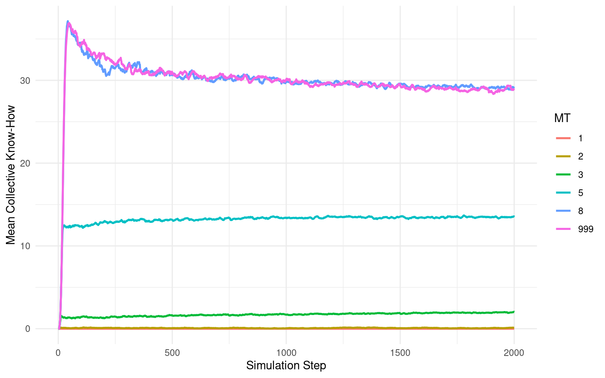
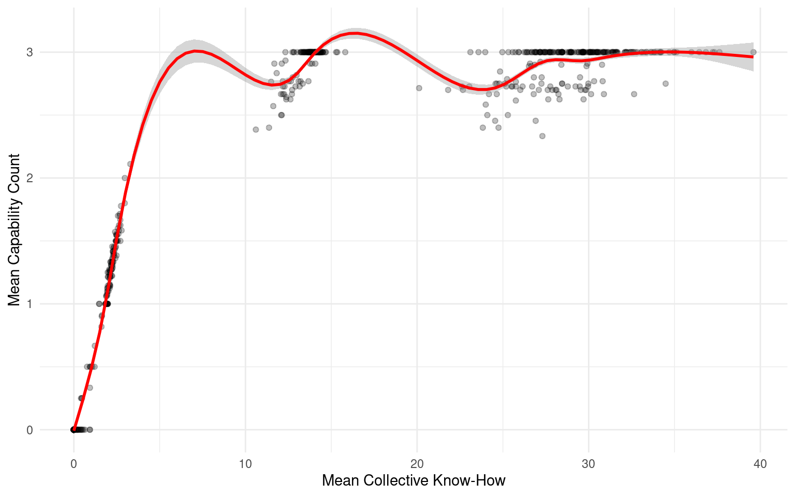
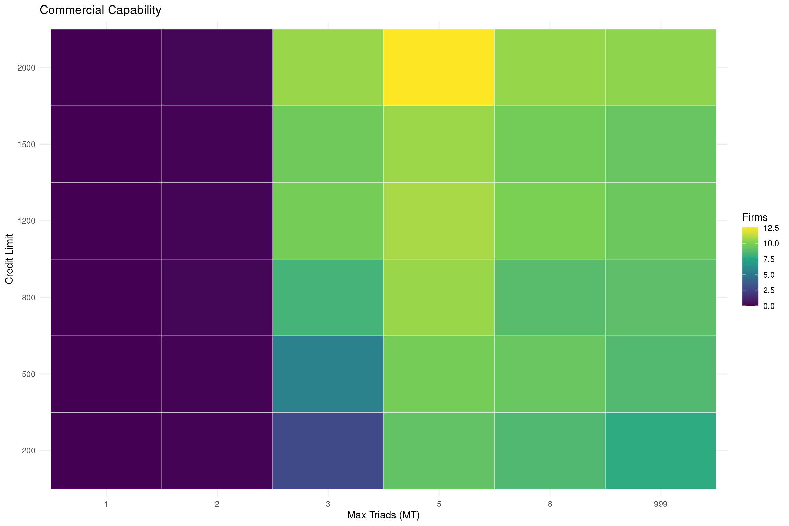
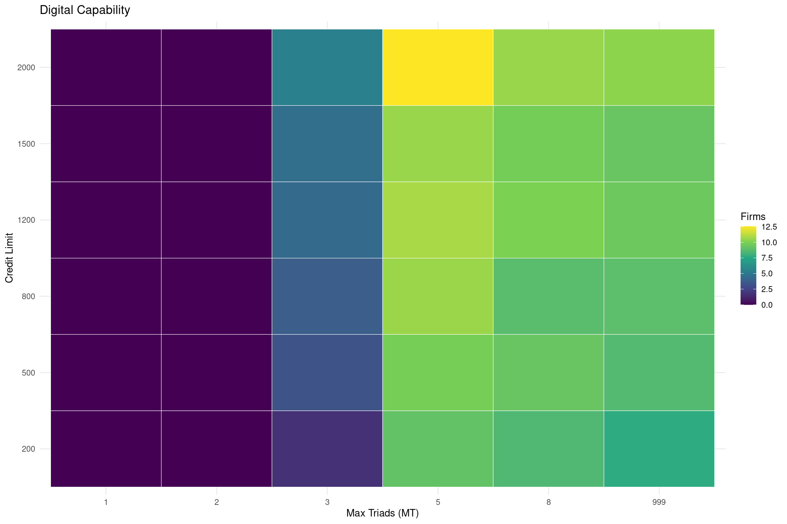
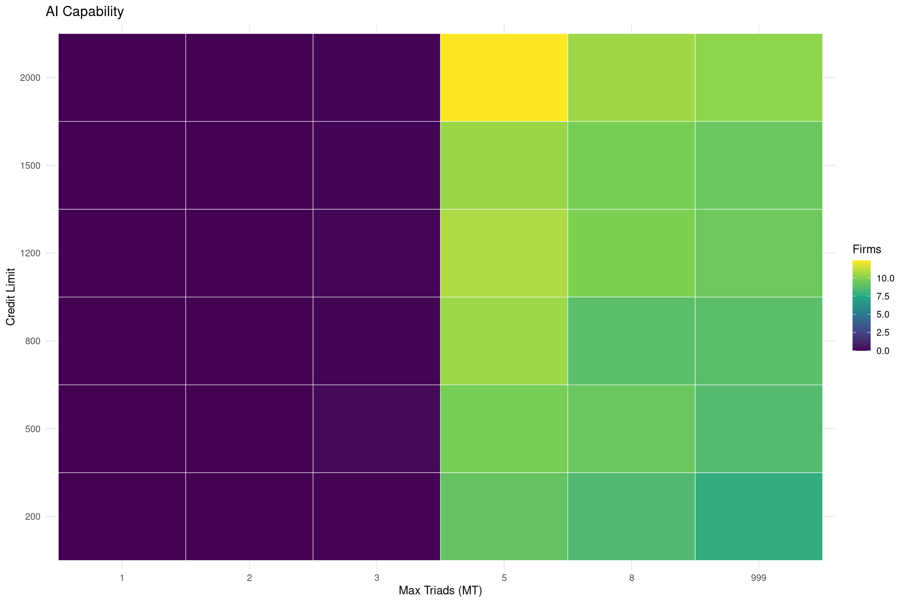
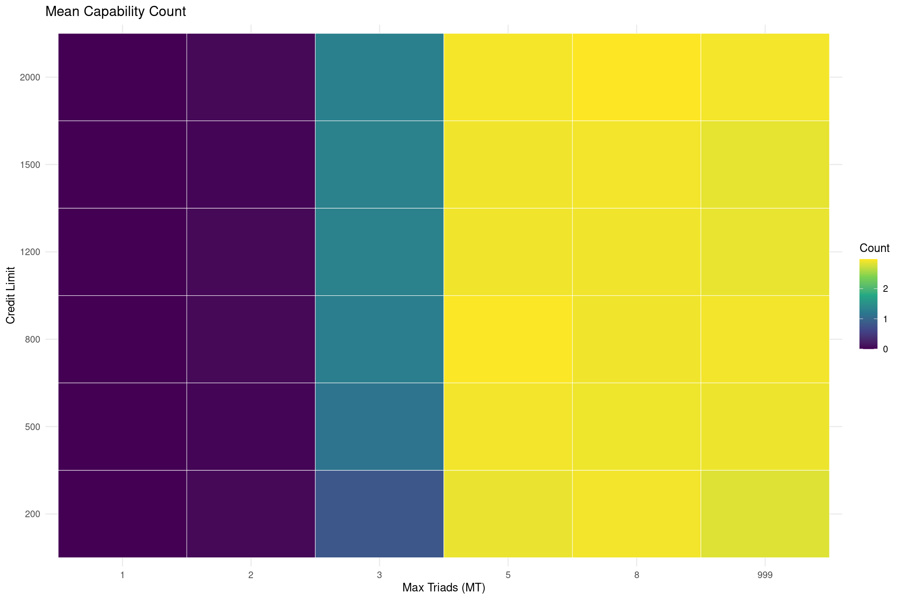
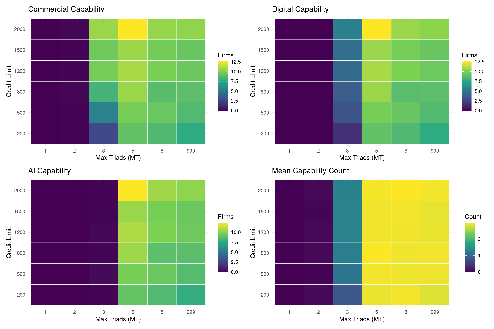
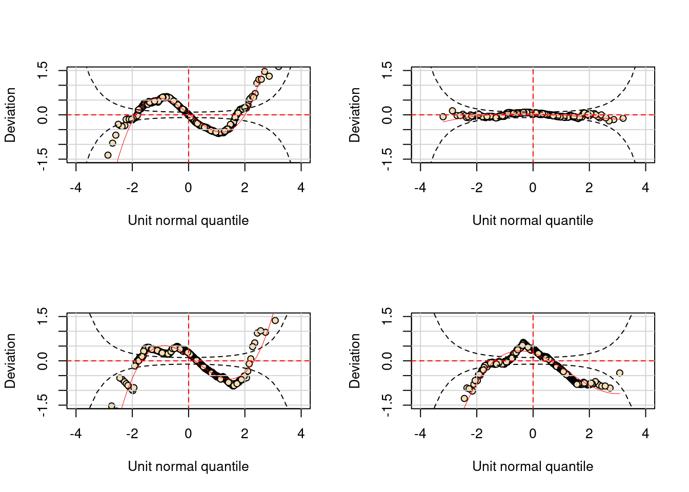

library(tidyverse)
library(effectsize)
library(viridis)
library(patchwork)
library(knitr)
library(kableExtra)Results Analysis for VirtECom 3.0
Supplementary Material
1 Setup
2 Data Loading
Our data loading relies on a pre-processed file saved as an RData data.RData
3 4. Results
3.1 4.1 Emergence of Collective Know‑How
3.1.1 Descriptive Statistics
df_ss %>%
summarise(
Mean_CK = mean(mean.firm.ck),
SD_CK = sd(mean.firm.ck),
Min_CK = min(mean.firm.ck),
Max_CK = max(mean.firm.ck)
) %>%
kable(digits = 3)| Mean_CK | SD_CK | Min_CK | Max_CK |
|---|---|---|---|
| 12.29 | 12.882 | 0 | 39.6 |
3.1.2 Temporal Evolution of Collective Know‑How
p_ck_time <- df_clean %>%
group_by(step, max.triads.per.worker) %>%
summarise(
CK = mean(mean.firm.ck),
.groups = "drop"
) %>%
ggplot(
aes(
step,
CK,
color = factor(max.triads.per.worker)
)
) +
geom_line(linewidth = .9) +
labs(
x = "Simulation Step",
y = "Mean Collective Know-How",
color = "MT"
) +
theme_minimal()
p_ck_time
3.1.3 Collective Know‑How Heatmap
p_ck_heatmap <- df_ss %>%
group_by(
max.triads.per.worker,
credit.limit.base
) %>%
summarise(
CK = mean(mean.firm.ck),
.groups = "drop"
) %>%
ggplot(
aes(
factor(max.triads.per.worker),
factor(credit.limit.base),
fill = CK
)
) +
geom_tile(color="white") +
scale_fill_viridis_c() +
labs(
x = "Max Triads",
y = "Credit Limit",
fill = "CK"
) +
theme_minimal()
p_ck_heatmap
3.1.4 Factorial ANOVA of Collective Know‑How
fit_ck <- aov(
mean.firm.ck ~
factor(max.triads.per.worker) *
factor(credit.limit.base),
data = df_ss
)
summary(fit_ck) Df Sum Sq Mean Sq
factor(max.triads.per.worker) 5 116038 23208
factor(credit.limit.base) 5 40 8
factor(max.triads.per.worker):factor(credit.limit.base) 25 73 3
Residuals 684 3163 5
F value Pr(>F)
factor(max.triads.per.worker) 5018.886 <2e-16 ***
factor(credit.limit.base) 1.735 0.124
factor(max.triads.per.worker):factor(credit.limit.base) 0.633 0.918
Residuals
---
Signif. codes: 0 '***' 0.001 '**' 0.01 '*' 0.05 '.' 0.1 ' ' 1eta_squared(
fit_ck,
partial = TRUE
)# Effect Size for ANOVA (Type I)
Parameter | Eta2 (partial) | 95% CI
---------------------------------------------------------------------------------------
factor(max.triads.per.worker) | 0.97 | [0.97, 1.00]
factor(credit.limit.base) | 0.01 | [0.00, 1.00]
factor(max.triads.per.worker):factor(credit.limit.base) | 0.02 | [0.00, 1.00]
- One-sided CIs: upper bound fixed at [1.00].3.1.5 Interpretation
The results indicate that collective know‑how emerges primarily from cognitive coordination structures. Cognitive constraints explain nearly all observed variation in collective know‑how, whereas access to credit has negligible explanatory power.
3.2 4.2 From Collective Know‑How to Innovation Capabilities
3.2.1 Relationship Between CK and Capability Formation
p_ck_cap <- df_ss %>%
ggplot(
aes(
mean.firm.ck,
mean.capability.count
)
) +
geom_point(alpha=.25) +
geom_smooth(
method="gam",
color="red",
linewidth=1
) +
labs(
x="Mean Collective Know‑How",
y="Mean Capability Count"
) +
theme_minimal()
p_ck_cap`geom_smooth()` using formula = 'y ~ s(x, bs = "cs")'
3.2.2 Interpretation
Capability formation exhibits strong nonlinear threshold behaviour. Capability accumulation accelerates only after collective know‑how surpasses minimum coordination thresholds.
3.3 4.3 Joint Effects of Cognitive Constraints and Credit on Innovation Capabilities
3.3.1 Evolution of Capability Indicators
p_caps <- df_clean %>%
group_by(
step,
max.triads.per.worker
) %>%
summarise(
commercial =
mean(firms.with.commercial.capability),
digital =
mean(firms.with.digital.capability),
ai =
mean(firms.with.ai.capability),
capability =
mean(mean.capability.count),
.groups = "drop"
) %>%
pivot_longer(
commercial:capability,
names_to="metric",
values_to="value"
) %>%
ggplot(
aes(
step,
value,
color=factor(max.triads.per.worker)
)
) +
geom_line() +
facet_wrap(
~metric,
scales="free_y"
) +
theme_minimal()
p_caps
crear_heatmap <- function(data, var_col, titulo_panel, leyenda_titulo) {
data %>%
group_by(
max.triads.per.worker,
credit.limit.base
) %>%
summarise(
val_mean = mean(.data[[var_col]], na.rm = TRUE),
.groups = "drop"
) %>%
ggplot(
aes(
x = factor(max.triads.per.worker),
y = factor(credit.limit.base),
fill = val_mean
)
) +
geom_tile(color = "white") +
scale_fill_viridis_c() +
labs(
title = titulo_panel,
x = "Max Triads (MT)",
y = "Credit Limit",
fill = leyenda_titulo
) +
theme_minimal()
}
p_hm_comm <- crear_heatmap(
df_ss,
"firms.with.commercial.capability",
"Commercial Capability",
"Firms"
)
p_hm_dig <- crear_heatmap(
df_ss,
"firms.with.digital.capability",
"Digital Capability",
"Firms"
)
p_hm_ai <- crear_heatmap(
df_ss,
"firms.with.ai.capability",
"AI Capability",
"Firms"
)
p_hm_cap <- crear_heatmap(
df_ss,
"mean.capability.count",
"Mean Capability Count",
"Count"
)3.3.2 Capability Heatmaps
# reutilizar tu función crear_heatmap()
p_hm_comm
p_hm_dig
p_hm_ai
p_hm_cap
(p_hm_comm | p_hm_dig) /
(p_hm_ai | p_hm_cap)
3.3.3 Factorial ANOVAs
capability_vars <- c(
"firms.with.commercial.capability",
"firms.with.digital.capability",
"firms.with.ai.capability",
"mean.capability.count"
)
anova_results <- list()
effect_results <- list()
for(v in capability_vars){
fit <- aov(
as.formula(
paste(
v,
"~ factor(max.triads.per.worker) * factor(credit.limit.base)"
)
),
data=df_ss
)
anova_results[[v]] <- summary(fit)
effect_results[[v]] <- eta_squared(
fit,
partial=TRUE
)
}
effect_results$firms.with.commercial.capability
# Effect Size for ANOVA (Type I)
Parameter | Eta2 (partial) | 95% CI
---------------------------------------------------------------------------------------
factor(max.triads.per.worker) | 0.87 | [0.86, 1.00]
factor(credit.limit.base) | 0.21 | [0.16, 1.00]
factor(max.triads.per.worker):factor(credit.limit.base) | 0.25 | [0.18, 1.00]
- One-sided CIs: upper bound fixed at [1.00].
$firms.with.digital.capability
# Effect Size for ANOVA (Type I)
Parameter | Eta2 (partial) | 95% CI
---------------------------------------------------------------------------------------
factor(max.triads.per.worker) | 0.91 | [0.90, 1.00]
factor(credit.limit.base) | 0.15 | [0.11, 1.00]
factor(max.triads.per.worker):factor(credit.limit.base) | 0.11 | [0.04, 1.00]
- One-sided CIs: upper bound fixed at [1.00].
$firms.with.ai.capability
# Effect Size for ANOVA (Type I)
Parameter | Eta2 (partial) | 95% CI
---------------------------------------------------------------------------------------
factor(max.triads.per.worker) | 0.95 | [0.94, 1.00]
factor(credit.limit.base) | 0.12 | [0.08, 1.00]
factor(max.triads.per.worker):factor(credit.limit.base) | 0.13 | [0.07, 1.00]
- One-sided CIs: upper bound fixed at [1.00].
$mean.capability.count
# Effect Size for ANOVA (Type I)
Parameter | Eta2 (partial) | 95% CI
---------------------------------------------------------------------------------------
factor(max.triads.per.worker) | 0.97 | [0.97, 1.00]
factor(credit.limit.base) | 0.03 | [0.01, 1.00]
factor(max.triads.per.worker):factor(credit.limit.base) | 0.08 | [0.02, 1.00]
- One-sided CIs: upper bound fixed at [1.00].extract_anova <- function(var_name, data){
fit <- aov(
as.formula(
paste(
var_name,
"~ factor(max.triads.per.worker) * factor(credit.limit.base)"
)
),
data = data
)
aov_tab <- as.data.frame(
summary(fit)[[1]]
)[1:3, ]
eta_tab <- as.data.frame(
eta_squared(
fit,
partial = TRUE
)
)
tibble(
Outcome = var_name,
Effect = c(
"Max Triads (MT)",
"Credit Limit",
"MT × Credit"
),
Df = aov_tab$Df,
F = round(aov_tab$`F value`, 3),
p = signif(aov_tab$`Pr(>F)`, 3),
Eta2_p = round(
eta_tab$Eta2_partial,
3
)
)
}
outcomes <- c(
"mean.firm.ck",
"firms.with.commercial.capability",
"firms.with.digital.capability",
"firms.with.ai.capability",
"mean.capability.count"
)
anova_results <- purrr::map_dfr(
outcomes,
extract_anova,
data = df_ss
)
anova_results %>%
mutate(
Outcome = recode(
Outcome,
"mean.firm.ck" = "Collective Know-How",
"firms.with.commercial.capability" = "Commercial Capability",
"firms.with.digital.capability" = "Digital Capability",
"firms.with.ai.capability" = "AI Capability",
"mean.capability.count" = "Mean Capability Count"
),
p = ifelse(
p < .001,
"<0.001",
format(round(p,3), nsmall = 3)
)
) %>%
kable(
digits = 3,
caption =
"Factorial ANOVA and partial effect sizes for collective know-how and innovation capability outcomes"
)| Outcome | Effect | Df | F | p | Eta2_p |
|---|---|---|---|---|---|
| Collective Know-How | Max Triads (MT) | 5 | 5018.886 | <0.001 | 0.973 |
| Collective Know-How | Credit Limit | 5 | 1.735 | 0.124 | 0.013 |
| Collective Know-How | MT × Credit | 25 | 0.633 | 0.918 | 0.023 |
| Commercial Capability | Max Triads (MT) | 5 | 957.407 | <0.001 | 0.875 |
| Commercial Capability | Credit Limit | 5 | 36.147 | <0.001 | 0.209 |
| Commercial Capability | MT × Credit | 25 | 8.936 | <0.001 | 0.246 |
| Digital Capability | Max Triads (MT) | 5 | 1318.315 | <0.001 | 0.906 |
| Digital Capability | Credit Limit | 5 | 24.847 | <0.001 | 0.154 |
| Digital Capability | MT × Credit | 25 | 3.230 | <0.001 | 0.106 |
| AI Capability | Max Triads (MT) | 5 | 2555.043 | <0.001 | 0.949 |
| AI Capability | Credit Limit | 5 | 18.379 | <0.001 | 0.118 |
| AI Capability | MT × Credit | 25 | 4.236 | <0.001 | 0.134 |
| Mean Capability Count | Max Triads (MT) | 5 | 4509.019 | <0.001 | 0.971 |
| Mean Capability Count | Credit Limit | 5 | 4.057 | 0.001 | 0.029 |
| Mean Capability Count | MT × Credit | 25 | 2.257 | <0.001 | 0.076 |
3.4 4.4 System-Level Outcomes
3.4.1 Market Structure
df_ss %>%
summarise(
Firms = mean(number.of.firms),
Products = mean(count.products),
NetCapital = mean(mean.net.capital),
Debt = mean(sum.debt.of.firms)
) %>%
kable(digits=3)| Firms | Products | NetCapital | Debt |
|---|---|---|---|
| 6.983 | 22.113 | 7580.14 | 1278.344 |
3.4.2 Interpretation
Differences in coordination capacity not only affect capability formation but also generate distinct system-wide outcomes regarding firm survival, productive diversity and capital accumulation.
4 Scrutiny of assumptions
In order to evaluate whether previous results from a general linear model are valid or not, we now focus on examining the assumptions of the ANOVA
library(lmtest)Loading required package: zoo
Attaching package: 'zoo'The following objects are masked from 'package:base':
as.Date, as.Date.numericlibrary(car)Loading required package: carData
Attaching package: 'car'The following object is masked from 'package:dplyr':
recodeThe following object is masked from 'package:purrr':
somelibrary(moments)
auditar_glm <- function(var_name, data) {
fml <- as.formula(paste(var_name, "~ factor(max.triads.per.worker) * factor(credit.limit.base)"))
fit <- lm(fml, data = data)
res <- residuals(fit)
bp <- bptest(fit)
sw <- shapiro.test(res)
tibble(
Outcome = var_name,
Prop_Zeros = round(mean(data[[var_name]] == 0, na.rm = TRUE), 3),
Skewness = round(skewness(res), 3),
Kurtosis = round(kurtosis(res), 3),
BP_Stat = round(as.numeric(bp$statistic), 2),
BP_p = ifelse(bp$p.value < 0.001, "<0.001", format(round(bp$p.value, 3), nsmall = 3)),
SW_W = round(as.numeric(sw$statistic), 3),
SW_p = ifelse(sw$p.value < 0.001, "<0.001", format(round(sw$p.value, 3), nsmall = 3))
)
}
diagnosticos_glm <- purrr::map_dfr(outcomes, auditar_glm, data = df_ss)
diagnosticos_glm %>%
kable(caption = "Diagnostic tests of General Linear Model assumptions (Homoscedasticity and Gaussian residuals)")| Outcome | Prop_Zeros | Skewness | Kurtosis | BP_Stat | BP_p | SW_W | SW_p |
|---|---|---|---|---|---|---|---|
| mean.firm.ck | 0.310 | -2.820 | 47.788 | 59.72 | 0.006 | 0.707 | <0.001 |
| firms.with.commercial.capability | 0.335 | 0.366 | 7.215 | 213.78 | <0.001 | 0.904 | <0.001 |
| firms.with.digital.capability | 0.362 | 0.304 | 6.170 | 154.98 | <0.001 | 0.915 | <0.001 |
| firms.with.ai.capability | 0.482 | 0.058 | 9.229 | 135.01 | <0.001 | 0.861 | <0.001 |
| mean.capability.count | 0.335 | -2.855 | 40.153 | 82.70 | <0.001 | 0.712 | <0.001 |
As expected, these results show that our variables do not behave as a normal-like distribution, leading us to introduce GAMLSS estimation in our statistical comparisons.
library(gamlss)Loading required package: splinesLoading required package: gamlss.data
Attaching package: 'gamlss.data'The following object is masked from 'package:datasets':
sleepLoading required package: gamlss.distLoading required package: nlme
Attaching package: 'nlme'The following object is masked from 'package:dplyr':
collapseLoading required package: parallel ********** GAMLSS Version 5.5-5 ********** For more on GAMLSS look at https://www.gamlss.com/Type gamlssNews() to see new features/changes/bug fixes.# 1. Collective Know-How (CK): GLM Normal vs GAMLSS Zero-Adjusted Gamma (ZAGA)
m_ck_glm <- gamlss(
mean.firm.ck ~ factor(max.triads.per.worker) * factor(credit.limit.base),
family = NO(),
data = df_ss,
trace = FALSE
)
m_ck_gamlss <- gamlss(
mean.firm.ck ~ factor(max.triads.per.worker) * factor(credit.limit.base),
sigma.formula = ~ factor(max.triads.per.worker) + factor(credit.limit.base),
nu.formula = ~ factor(max.triads.per.worker),
family = ZAGA(),
data = df_ss,
trace = FALSE
)
# 2. Mean Capability Count en el régimen activo (MT >= 3, donde se supera el umbral de parálisis)
df_active <- df_ss %>% filter(max.triads.per.worker >= 3)
m_cap_glm <- gamlss(
mean.capability.count ~ factor(max.triads.per.worker) * factor(credit.limit.base),
family = NO(),
data = df_active,
trace = FALSE
)
m_cap_gamlss <- gamlss(
mean.capability.count ~ factor(max.triads.per.worker) * factor(credit.limit.base),
sigma.formula = ~ factor(max.triads.per.worker) + factor(credit.limit.base),
family = NO(),
data = df_active,
trace = FALSE
)
# 3. Tabla comparativa de bondad de ajuste (AIC y BIC)
comparacion_gamlss <- tibble(
Outcome = c("Collective Know-How (All regimes)", "Mean Capability Count (Active regime, MT >= 3)"),
GLM_Family = c("Gaussian Homoscedastic (NO)", "Gaussian Homoscedastic (NO)"),
GLM_AIC = round(c(AIC(m_ck_glm), AIC(m_cap_glm)), 1),
GLM_BIC = round(c(GAIC(m_ck_glm, k = log(nrow(df_ss))), GAIC(m_cap_glm, k = log(nrow(df_active)))), 1),
GAMLSS_Family = c("Zero-Adjusted Gamma (ZAGA)", "Gaussian Heteroscedastic (NO)"),
GAMLSS_AIC = round(c(AIC(m_ck_gamlss), AIC(m_cap_gamlss)), 1),
GAMLSS_BIC = round(c(GAIC(m_ck_gamlss, k = log(nrow(df_ss))), GAIC(m_cap_gamlss, k = log(nrow(df_active)))), 1)
)
comparacion_gamlss %>%
kable(caption = "Model selection comparison between Homoscedastic GLM (ANOVA) and Heteroscedastic/Zero-Adjusted GAMLSS")| Outcome | GLM_Family | GLM_AIC | GLM_BIC | GAMLSS_Family | GAMLSS_AIC | GAMLSS_BIC |
|---|---|---|---|---|---|---|
| Collective Know-How (All regimes) | Gaussian Homoscedastic (NO) | 3182.9 | 3352.3 | Zero-Adjusted Gamma (ZAGA) | 1925.6 | 2168.3 |
| Mean Capability Count (Active regime, MT >= 3) | Gaussian Homoscedastic (NO) | 152.4 | 256.7 | Gaussian Heteroscedastic (NO) | -159.4 | -21.6 |
# 4. Prueba formal de Razón de Verosimilitud (LRT) en el régimen activo
LR.test(m_cap_glm, m_cap_gamlss) Likelihood Ratio Test for nested GAMLSS models.
(No check whether the models are nested is performed).
Null model: deviance= 102.3923 with 25 deg. of freedom
Altenative model: deviance= -225.3751 with 33 deg. of freedom
LRT = 327.7674 with 8 deg. of freedom and p-value= 0 # 5. Diagnóstico visual de residuos cuantílicos (Worm Plots)
par(mfrow = c(2, 2))
wp(m_ck_glm, ylim.all = 1.5, main = "CK: GLM (Normal)")Warning in wp(m_ck_glm, ylim.all = 1.5, main = "CK: GLM (Normal)"): Some points are missed out
increase the y limits using ylim.allwp(m_ck_gamlss, ylim.all = 1.5, main = "CK: GAMLSS (ZAGA)")
wp(m_cap_glm, ylim.all = 1.5, main = "Capabilities (MT>=3): GLM")Warning in wp(m_cap_glm, ylim.all = 1.5, main = "Capabilities (MT>=3): GLM"): Some points are missed out
increase the y limits using ylim.allwp(m_cap_gamlss, ylim.all = 1.5, main = "Capabilities (MT>=3): GAMLSS")Warning in wp(m_cap_gamlss, ylim.all = 1.5, main = "Capabilities (MT>=3): GAMLSS"): Some points are missed out
increase the y limits using ylim.all
par(mfrow = c(1, 1))
pdf("fig4_worm_plots.pdf", width = 8, height = 6)
par(mfrow = c(2, 2), mar = c(4, 4, 2.5, 1))
wp(m_ck_glm, ylim.all = 2.0, main = "A) Collective Know-How: GLM (Normal)")Warning in wp(m_ck_glm, ylim.all = 2, main = "A) Collective Know-How: GLM (Normal)"): Some points are missed out
increase the y limits using ylim.allwp(m_ck_gamlss, ylim.all = 2.0, main = "B) Collective Know-How: GAMLSS (ZAGA)")
wp(m_cap_glm, ylim.all = 2.0, main = "C) Capabilities (MT >= 3): GLM (Normal)")Warning in wp(m_cap_glm, ylim.all = 2, main = "C) Capabilities (MT >= 3): GLM (Normal)"): Some points are missed out
increase the y limits using ylim.allwp(m_cap_gamlss, ylim.all = 2.0, main = "D) Capabilities (MT >= 3): GAMLSS (Heteroscedastic)")Warning in wp(m_cap_gamlss, ylim.all = 2, main = "D) Capabilities (MT >= 3): GAMLSS (Heteroscedastic)"): Some points are missed out
increase the y limits using ylim.allpar(mfrow = c(1, 1))
dev.off()png
2 5 Discussion-Oriented Summary
- Cognitive constraints strongly determine collective know‑how.
- Collective know‑how exhibits threshold dynamics.
- Innovation capabilities emerge from collective know‑how rather than directly from credit.
- Financial resources amplify outcomes but do not create collective know‑how.
- Collective know‑how acts as the generative mechanism linking distributed worker knowledge to organizational innovation capabilities.